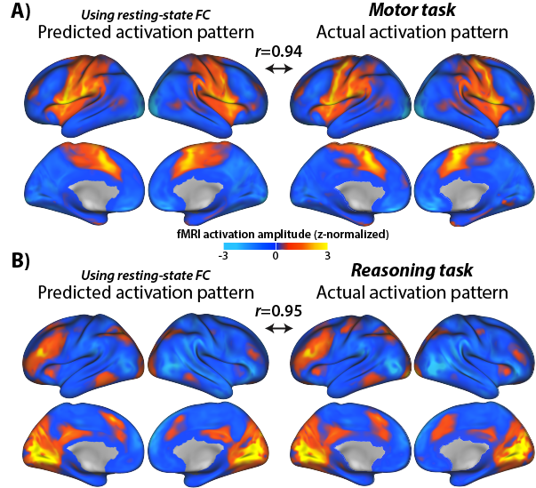
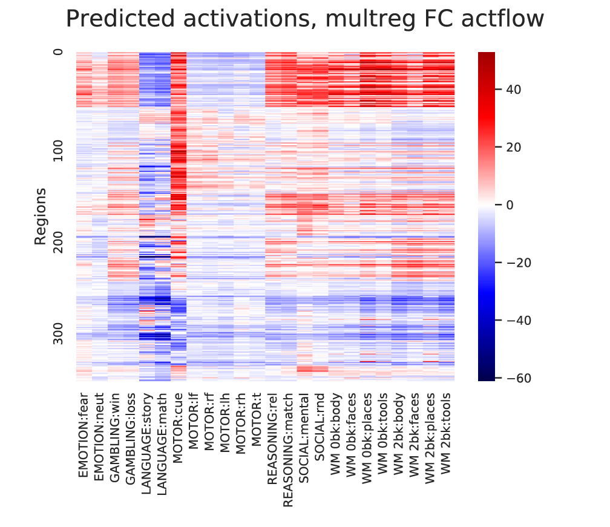
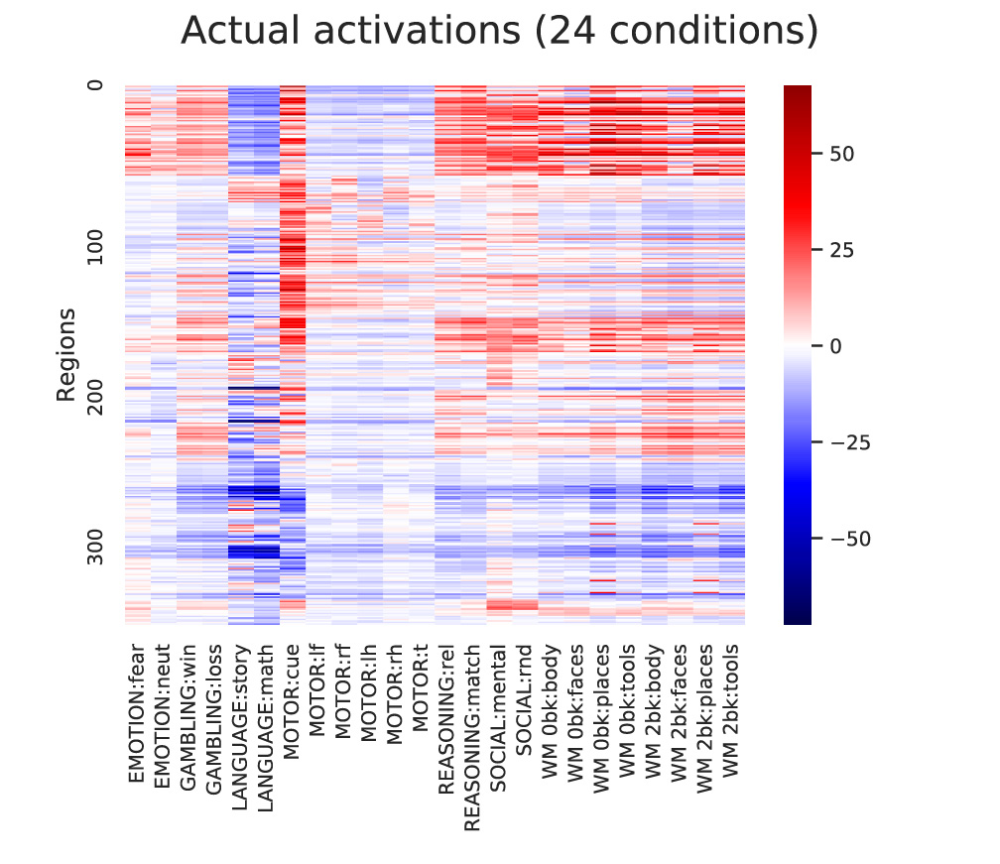

The Brain Activity Flow ("Actflow") Toolbox
Version 0.2.5 (beta)
Overview
This toolbox facilitates linking brain connectivity with task-evoked activity and associated cognitive/behavioral functions. The primary focus is on activity flow mapping and related methods (Cole et al. (2016) & Ito et al. (2017)).
Activity flow mapping is based on core principles underlying brain network simulations, applying these principles to empirical neural/neuroimaging data. It is a highly flexible framework that is constantly being improved via better connectivity methods and creative uses of the approach to better understand brain function.
Activity flow mapping can be used, for instance, to infer whether one or more brain connections are involved in producing a particular function. This method can also be used to relate multiple task-evoked activations to each other (e.g., predicting one neural population's activity from another's activity). More generally, activity flow mapping can be thought of as creating network coding models (Ito et al. (2020)), which are empirically-constrained neural network models.
Other methods included in the toolbox (which can optionally be used along with activity flow mapping) are advanced versions of resting-state functional connectivity and task-state functional connectivity. The primary focus (for now) is on fMRI data, but in principle these approaches can be applied to any kind of neural data.
This code repository was created by the Cole Neurocognition Lab at Rutgers University: http://www.colelab.org/
We are happy for others to contribute to the code as well.
See the example notebook to see the Actflow Toolbox in action
We provide 30 subjects' data from the Human Connectome Project for trying out the toolbox
Core algorithm and principles behind activity flow mapping
Activity flow mapping is a method validated and published in Nature Neuroscience in 2016 (see Cole et al. (2016)), with multiple follow-up studies further validating the approach.
Activity flow mapping has two basic steps:
1) Activity flow modeling: Simulating the flow (movement) of activity between neural populations, using empirical data to estimate activity levels and routes of flow (connectivity). This is done by running the standard "propagation rule" and "activation rule" steps used in most neural network simulations (see Ito et al. (2020)). In the standard approach each neural population's activity level is predicted based on the flow from every other recorded neural population (from Cole et al. (2016)):

2) Testing prediction accuracy: The predicted brain activity pattern is compared to the actual recorded activity, providing evidence for or against the activity flow model used to make the predictions. Predictions of multiple models can be compared to quantify model validity. Two examples of predicted-to-actual accuracy testing with fMRI data (from Cole et al. (2016)):

In principle, any measure of neural activity and any measure of neural connectivity (e.g., structural connectivity) can be used with activity flow mapping. Some modifications are necessary for fast temporal resolution data such as EEG/MEG or multi-unit recording, but these should be available soon (we are working on it!).
Included connectivity mapping methods
- All methods can be applied to resting-state or task-state data
- Correlation-based functional connectivity
- Multiple-regression functional connectivity
- Ordinary least squares multiple regression connectivity
- Regularized multiple regression connectivity
- Principle components regression connectivity (PCR)
- Partial-correlation functional connectivity
- Inverse covariance-based partial correlation
- Regularized partial correlation [planned]
- Causal connectivity
- CombinedFC [planned] (see https://github.com/ColeLab/CombinedFC)
- fGES; https://doi.org/10.1007/s41060-016-0032-z) [planned]
Preprocessing
- The toolbox is compatible with existing preprocessing software such as the HCP Pipelines (https://humanconnectome.org/software/hcp-mr-pipelines/) or fMRIPrep (https://fmriprep.readthedocs.io/en/stable/)
- Task functional connectivity:
- Finite impulse response (FIR) regressed task data is recommended, which provides flexible mean task-evoked response removal for task-state functional connectivity (Cole et al. (2019)). See Task FC Mean Activity Removal for task-state functional connectivity estimation.
- We recommend empirically validated nusiance regression approaches for removing fMRI data artifacts, such as for resting-state functional connectivity (or task-state functional connectivity)
- Example: The Ciric et al. (2017) validated preprocessing pipelines (https://www.sciencedirect.com/science/article/pii/S1053811917302288)
Cite as:
- Cole MW, Ito T, Bassett DS, Schultz DH (2016). "Activity flow over resting-state networks shapes cognitive task activations". Nature Neuroscience. 19:1718–1726. doi.org/10.1038/nn.4406
- https://colelab.github.io/ActflowToolbox/ and
- The article that describes the specific toolbox functions being used in most detail
How to install
git clone --recurse-submodules https://github.com/ColeLab/ActflowToolbox.git
Email list/forum
We strongly encourage you to join the ColeNeuroLab Users Group (https://groups.google.com/forum/#!forum/coleneurolab_users), so you can be informed about major updates in this repository and others hosted by the Cole Neurocognition Lab.
Conventions
- Data matrices all node X time
- Directed connectivity matrices all target X source
- Primary (default) brain parcellation: CAB-NP (https://github.com/ColeLab/ColeAnticevicNetPartition), which uses the Glasser2016 parcellation for cortex (https://balsa.wustl.edu/study/show/RVVG) and includes an additional 358 subcortical parcels. Cortex-only analyses with only the Glasser2016 parcels are easily implemented. Other parcellations can be used, and we anticipate integrating other parcellations in the future.
Examples
A Jupyter Notebook with example analyses (and example data) is viewable here: HCP_example.ipynb
Example of calculating activity flow mapping predictions using multiple-regression FC and standard task-evoked activations with fMRI data (in Python 3; assumes task activations and resting-state fMRI data are already loaded):
import ActflowToolbox as actflow
import numpy as np
import matplotlib.pyplot as plt
import seaborn as sns
restFC_mreg=np.zeros((np.shape(restdata)[0],np.shape(restdata)[0],np.shape(restdata)[2]))
for scount in np.arange(np.shape(restdata)[2]):
restFC_mreg[:,:,scount]=actflow.connectivity_estimation.multregconn(restdata[:,:,scount])
print("==Activity flow mapping results, multiple-regression-based resting-state FC, 24 task conditions==")
actflowOutput_restFCMReg_bycond = actflow.actflowcomp.actflowtest(activations_bycond, restFC_mreg)
Output:
==Activity flow mapping results, multiple-regression-based resting-state FC, 24 task conditions==
===Comparing prediction accuracies between models (similarity between predicted and actual brain activation patterns)===
==Comparisons between predicted and actual activation patterns, across all conditions and nodes:==
--Compare-then-average (calculating prediction accuracies before cross-subject averaging):
Each comparison based on 24 conditions across 360 nodes, p-values based on 30 subjects (cross-subject variance in comparisons)
Mean Pearson r = 0.78, t-value vs. 0: 62.27, p-value vs. 0: 1.9635597302245892e-32
Mean % variance explained (R^2 score, coeff. of determination) = 0.57
Mean MAE (mean absolute error) = 7.54
Note: Pearson r and Pearson r^2 are scale-invariant, while R^2 and MAE are not. R^2 units: percentage of the to-be-predicted data's unscaled variance, ranging from negative infinity (because prediction errors can be arbitrarily large) to positive 1. See https://scikit-learn.org/stable/modules/generated/sklearn.metrics.r2_score.html for more info.
Visualizing the results:
#Visualize predicted and actual activation patterns, with multiple-regression FC
plt.figure(figsize=[7,5])
ax = sns.heatmap(np.mean(actflowOutput_restFCMReg_bycond['actPredVector_bytask_bysubj'],axis=2)[netorder,:],center=0,cmap='seismic',cbar=True,yticklabels=100,xticklabels=taskConditions)
ax.figure.suptitle('Predicted activations, multreg FC actflow')
ax.set(ylabel='Regions')
plt.figure(figsize=[7,5])
ax = sns.heatmap(np.mean(activations_bycond,axis=2)[netorder,:],center=0,cmap='seismic',cbar=True,yticklabels=100,xticklabels=taskConditions)
ax.figure.suptitle('Actual activations (24 conditions)')
ax.set(ylabel='Regions')
Output:

General guidelines for activity flow mapping
- Avoid circularity:
- Use connectivity independent of the to-be-predicted state when possible, such as resting-state functional connectivity. This implicitly tests for generalization across brain states (when predicting task activations), which is important given that connectivity is mostly invariant across states. There is substantial evidence for the dominant effect of intrinsic/state-general connectivity (see Cole et al. (2014) and Gratton et al. (2018)). Using structural connectivity also avoids this issue, though some details (e.g., the aggregate effects of synaptic weights) are lost with most structural connectivity methods.
- Ensure statistical independence of activation and functional connectivity estimates when the same state is used for estimating both. The recommended approach is to use finite impulse response (FIR) regression as a preprocessing step, removing the to-be-predicted mean task activations prior to estimating task-state functional connectivity. Note that this leaves most of the task-related variance in the time series, since mean task effects are only a small (but important; which is why we try to predict them via activity flow mapping) portion of the data. See Cole et al. (2019) for more info.
- Spatial smoothness of the data can introduce circularity, since this results in the same underlying neural activity being assigned to multiple spatial locations (such as multiple voxels in fMRI). We therefore recommend excluding activity flow source data within approximately 10 mm from the to-be-predicted neural signal with fMRI data (see Cole et al. (2016)). This is less of a concern with brain region level data, since it would only apply to voxels/vertices at the border of each region. We nonetheless implemented a "non-circular" version of region-level activity analysis (excluding regions within 10 mm of the to-be-predicted region), which is demonstrated in the example notebook. The vast majority of results do not change with vs. withou the "non-circular" region-level approach. Note that standard activity flow mapping should not be used with EEG/MEG or related methods at this time, since the source spread implicit in those approaches is so substantial (even when using source localization) that it would result in substantial circularity. (We are working on an approach to get around this problem, however.)
- Compare-then-average vs. average-then-compare:
- We recommend compare-then-average statistics for most analyses (the default option in the actflowtest function). Compare-then-average compares each subject's predicted to actual activity prior to aggregating results across subjects, such that the group-level estimate is representative of individual subject results (i.e., what would be expected if the analysis was run with a new random subject). In contrast, the average-then-compare approach averages results across subjects prior to comparing predicted to actual activity. This typically boosts predicted-to-actual similarity due to more data being included in both the predicted and actual estimates, as well as due to "bluring"/smoothing the data from cross-subject averaging. It also prevents computation of meaningful p-values, since there is no inter-subject variance in prediction accuracy to use for t-tests and similar approaches. Note, however, that visualizing group results (plotting predicted and actual activation patterns next to each other) effectively results in the average-then-compare approach, since results are averaged prior to the reader comparing the results by eye. Thus, predicted-to-actual similarity typically appears higher in these plots than they are at the individual subject level.
Software development guidelines
- Primary language: Python 3
- Secondary language (for select functions, minimally maintained/updated): MATLAB
- Versioning guidelines: Semantic Versioning 2.0.0 (https://semver.org/); used loosely prior to v1.0.0, strictly after
- Using GitHub for version control
- Those new to Git should go through a tutorial for branching, etc.: https://www.youtube.com/watch?v=oFYyTZwMyAg and https://guides.github.com/activities/hello-world/
- Use branching for adding new features, making sure code isn't broken by changes
- Considering using unit tests and Travis CI (https://travis-ci.org) in future
- Style specifications:
- PEP8 style as general guidelines (loosely applied for now): https://www.python.org/dev/peps/pep-0008/
- Soft tabs (4 spaces) for indentations [ideally set "soft tabs" setting in editor, so pressing tab key produces 4 spaces]
- Use intuitive variable and function names
- Add detailed comments to explain what code does (especially when not obvious)
Publications that have used activity flow mapping and/or this toolbox
- Cole MW, Ito T, Bassett DS, Schultz DH (2016). "Activity flow over resting-state networks shapes cognitive task activations". Nature Neuroscience. 19:1718–1726.http://dx.doi.org/10.1038/nn.4406
- Ito T, Kulkarni KR, Schultz DH, Mill RD, Chen RH, Solomyak LI, Cole MW (2017). "Cognitive task information is transferred between brain regions via resting-state network topology". Nature Communications. 8:1027. http://dx.doi.org/10.1038/s41467-017-01000-w
- Mill RD, Gordon BA, Balota DA, Zacks JM, Cole MW (Preprint). "Predicting dysfunctional age-related task activations from resting-state network alterations". bioRxiv. https://doi.org/10.1101/678086
Other related tools
- Information transfer mapping
- Task FC Mean Activity Removal for task-state functional connectivity estimation
- The Cole-Anticevic Brain-wide Network Partition (CAB-NP)
- Other tools released by the Cole Neurocognition Lab
Contents
- Directory: actflowcomp - Calculating activity flow mapping
- actflowcalc.py - Main function for calculating activity flow mapping predictions
- actflowtest.py - A convenience function for calculating activity-flow-based predictions and testing prediction accuracies (across multiple subjects)
- noiseceilingcalc.py - A convenience function for calculating the theoretical limit on activity-flow-based prediction accuracies (based on noise in the data being used)
- Directory: connectivity_estimation - Connectivity estimation methods
- calcactivity_parcelwise_noncircular_surface.py: High-level function for calculating parcelwise actflow with parcels that are touching (e.g., the Glasser 2016 parcellation), focusing on task activations. This can create circularity in the actflow predictions due to spatial autocorrelation. This function excludes vertices within X mm (10 mm by default) of each to-be-predicted parcel.
- calcconn_parcelwise_noncircular_surface.py: High-level function for calculating parcelwise actflow with parcels that are touching (e.g., the Glasser 2016 parcellation), focusing on connectivity estimation. This can create circularity in the actflow predictions due to spatial autocorrelation. This function excludes vertices within X mm (10 mm by default) of each to-be-predicted parcel.
- corrcoefconn.py: Calculation of Pearson correlation functional connectivity
- multregconn.py: Calculation of multiple-regression functional connectivity
- partial_corrconn.py: Calculation of partial-correlation functional connectivity
- pc_multregconn.py: Calculation of regularized multiple-regression functional connectivity using principle components regression (PCR). Useful when there are fewer time points than nodes, for instance.
- Directory: dependencies - Other packages Actflow Toolbox depends on
- Directory: examples - Example analyses that use the Actflow Toolbox (Jupyter notebook)
- Directory: matlab_code - Limited functions for activity flow mapping in MATLAB
- PCmultregressionconnectivity.m - Compute multiple regression-based functional connectivity; PC allows for more regions/voxels than time points.
- actflowmapping.m - MATLAB version of actflowcalc.py; Main function for computing activity flow mapping predictions
- multregressionconnectivity.m - Compute multiple regrression-based functional connectivity
- Directory: model_compare - Comparing prediction accuracies across models
- model_compare_predicted_to_actual.py - Calculation of predictive model performance
- model_compare.py - Reporting of model prediction performance, and comparison of prediction performance across models
- Directory: network_definitions - Data supporting parcel/region sets and network definitions
- dilateParcels.py - Dilate individual parcels (cortex and subcortex) and produce masks to exclude vertices within 10 mm; requires Connectome workbench
- Directory: simulations - Simulations used for validating methods
- Directory: tools - Miscellaneous tools
- addNetColors.py - Generates a heatmap figure with The Cole-Anticevic Brain-wide Network Partition (CAB-NP) colors along axes
- addNetColors_Seaborn.py - Generates a Seaborn heatmap figure with The Cole-Anticevic Brain-wide Network Partition (CAB-NP) colors along axes
- map_to_surface.py - Maps 2D matrix data onto a dscalar surface file (64k vertices); uses Glasser et al. 2016 ROI parcellation
- max_r.py - Permutation testing to control for FWE (as in Nichols & Holmes, 2002 max-t); individual difference correlations (r)
- max_t.py - Permutation testing to control for FWE (as in Nichols & Holmes, 2002); t-test variants (t)
- regression.py - Compute multiple linear regression (with L2 regularization option)